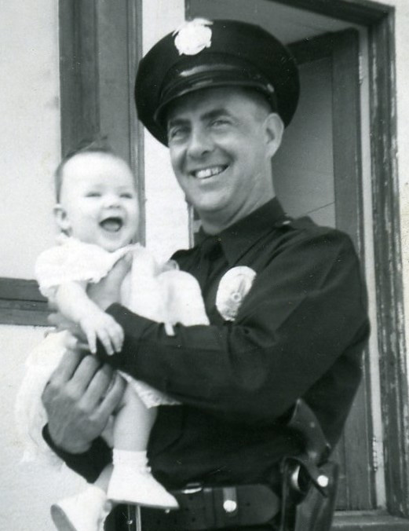
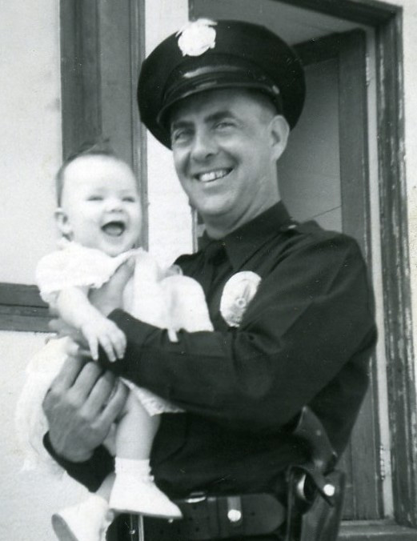

Arthur "Bud" Allen MILLER
- Born: 8 Jul 1924, Chicago, Cook County, Illinois
- Marriage (1): Marian "Sandy" DAMRELL
- Marriage (2): Consuelo "Connie" MENDEZ on 28 May 1955 in Ventura County, California
- Died: 5 Jan 1976, Carlsbad, San Diego County, California at age 51
- Buried: Jan 1976, Oceanside, San Diego County, California
 Cause of his death was Multiple Sclerosis. Cause of his death was Multiple Sclerosis.

General Notes:
MILITARY: World War II (1 Apr 1943 to 17 Oct 1945), Air Force Sergeant; Waist, Nose and Tail Gunner; received Purple Heart
OCCUPATION: Police Officer, L.A.P.D.
RESIDENCES: Chicago, Cook County, IL (1930 U.S. Census);
Glendale, Los Angeles County, CA (1931);
Los Angeles, Los Angeles County, CA (1938);
St. Helena, Napa County, CA (1942);
Glendale, Los Angeles County, CA (1946);
Carlsbad, San Diego County, CA (1976)
DEATH: Multiple Sclerosis at age 51
BURIAL: Eternal Hills Memorial Park, Oceanside, San Diego County, California
Research Notes:
-- Photos courtesy of G.A. Miller
-- Additional Photos of "Bud" Miller (https://flic.kr/s/aHskbGxwDi)
-- Find A Grave, Memorial # 94343400
-- U.S. Dept. of Veterans Affairs (BIRLS Death File, 1850-2010)
-- 1930 U.S. Federal Census
-- 1940 U.S. Federal Census
-- 1950 U.S. Federal Census
Arthur married Marian "Sandy" DAMRELL. The marriage ended in divorce. (Marian "Sandy" DAMRELL was born in 1924 in Tulsa, Tulsa County, Oklahoma.)
Arthur next married Consuelo "Connie" MENDEZ, daughter of Juan MENDEZ and Francisca FELIPE. The marriage ended in divorce. (Consuelo "Connie" MENDEZ was born on 22 Dec 1927 in Ventura, Ventura County, California and died on 5 Aug 1998 in Carlsbad, San Diego County, California.)
|

, Dorothy and Bud Miller
1939
Los Angeles, California
(Click on Picture to View Full Size)")
")
")
.jpg "Bud Miller
1944
World War II Bomber
(Click on Picture to View Full Size)") 
